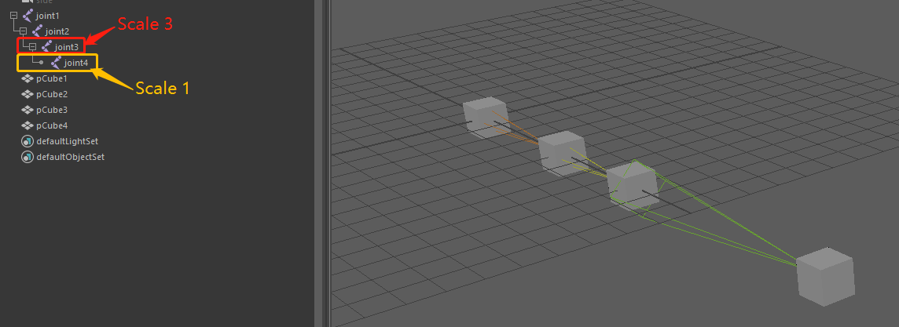
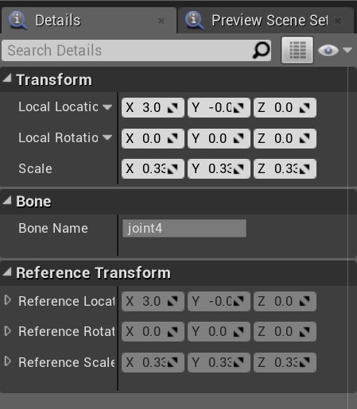
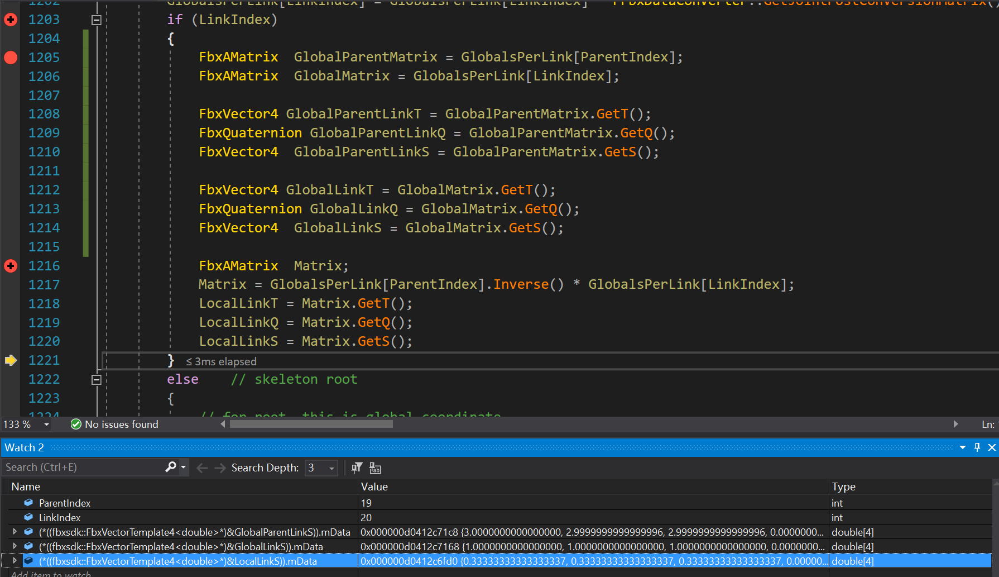
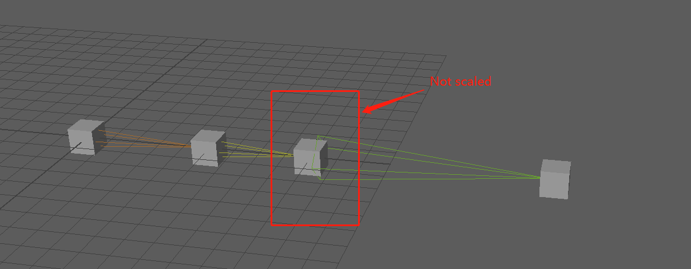

What’s The Issue?
For a special, or rather, a stupid reason, sometimes the bone scale in a bind pose can have a non-identity value. Let me address this issue by a test resource:

After being imported to the UE4, the joint4 ref pose became(0.333, 0.333, 0.333):

Oops.
Skeletal Mesh Importing
So the key is in function UnFbx::FFbxImporter::ImportBone. Each bone’s transform is evaluated in global space first, and then calculate the local transform when building the ref pose transform array.
1 | //Add the join orientation |
It turned out that the Global Scale Value, which is calculated by fbxsdk, of Joint4 is (1, 1, 1) instead of (3, 3, 3).

And that’s the reason why ref pose transform of Joint4 became (0.333, 0.333, 0.333) after the mesh is imported into UE4.
Deeper Thought
So why does Fbxsdk give (1, 1, 1) of global scale value?
Let’s take a look at what a bind pose is:
The bind pose is the pose that the skeleton is in when you bind skin and so it is the base (or rest) pose of your character.
And that is to say, a bind pose is supposed not to be skinned while being modified.
You might also notice that the skeletal mesh is not scaled even if it is skinned to a scaled bone:

In another word, the ref pose scale value of one bone would be normalized as soon as this bone got skinned with a mesh.
Actually, there is really no need for us to set a non-identity scale value.
Conclusion
In short, don’t use a non-identity scale value for bind pose, even if it might look fine in the first place. It may cause some trouble when handle additive animation or skeletal control nodes.